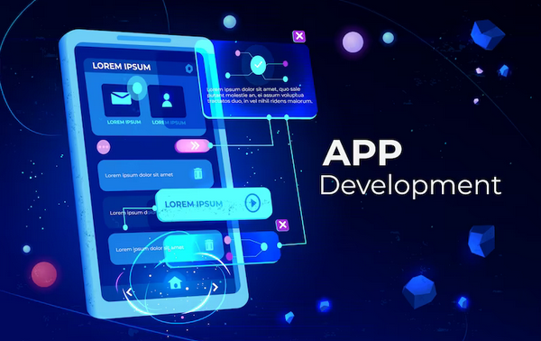

1.Software Developer/Engineer:

Career Overview: Software developers create computer programs and applications. They design, code, and maintain software that we use on our computers, smartphones, and other devices.
Requirements:
- Education: Many software developers have bachelor's degrees in computer science or related fields, but it's not always required.
- Programming Skills: You need to be good at programming languages like Python, Java, or JavaScript.
- Computer Science Knowledge:Understanding algorithms and data structures is crucial.
- Problem-Solving:Software developers solve complex problems with code.
- Teamwork:You often work in teams, so communication skills are important.
How Programming Helps: Learning programming languages and coding techniques is the first step. Programming allows you to build your own software and demonstrate your skills to potential employers.
2.Web Development/Full-Stack Developer:
Career Overview: Web developers create websites and web applications. Full-stack developers handle both the part users see (front-end) and the behind-the-scenes logic (back-end).
Requirements:
- Education: A degree in computer science or web development is helpful but not always necessary.
- HTML/CSS/JavaScript: These are the building blocks of web development.
- Frameworks: Knowledge of frameworks like React or Angular.
- Back-End Skills: Familiarity with server-side languages (e.g., Node.js, Python) and databases.
- >Version Control: Experience with tools like Git.
How Programming Helps: Programming is essential for creating interactive websites. Learning web technologies and building projects showcases your abilities.
3.Mobile App Developer:
Career Overview: Mobile app developers create apps for smartphones. You can specialize in Android (Java/Kotlin) or iOS (Swift).
Requirements:
- Education: Having a degree in computer science or a related field can be an advantage but is not mandatory.
- Programming Languages: You need to master the language for your chosen platform.
- Development Environment: Familiarity with software like Android Studio (Android) or Xcode (iOS).
- Design Skills: Understanding user interface design is important.
- API Integration: Apps often interact with web services.
How Programming Helps: Learning the specific languages and environments is crucial. Programming enables you to bring your app ideas to life.
4.Data Scientist:
Career Overview: Data scientists analyze data to extract insights. They help businesses make informed decisions.
Requirements:
- Education: Many data scientists have master's degrees or Ph.Ds in fields like data science, statistics, or computer science. A bachelor's degree can suffice for some entry-level roles.
- Programming Languages: Proficiency in Python or R for data analysis.
- Statistics: A strong grasp of statistical concepts.
- Data Manipulation: Skills in preparing and cleaning data.
- Machine Learning: Knowledge of machine learning algorithms.
- Data Visualization: Ability to create charts and graphs.
How Programming Helps: Programming skills allow you to manipulate and analyze large datasets efficiently. You'll use code to build and apply machine learning models.
5.Machine Learning Engineer:

Career Overview: Machine learning engineers work on creating and deploying machine learning models.
Requirements:
- Education: Advanced degrees in computer science or machine learning are common but not mandatory. Some ML engineers start with a bachelor's degree.
- Programming Skills: Proficiency in Python and machine learning libraries.
- Mathematics: Understanding linear algebra and calculus.
- Model Building: Knowledge of various machine learning algorithms.
- Deployment: Skills to put models into real-world applications.
How Programming Helps: Programming is central to building and deploying machine learning models. It's the tool you use to turn algorithms into practical solutions.
6.DevOps Engineer:
Career Overview: DevOps engineers focus on automating and improving software development processes.
Requirements:
- Education: A degree in computer science or a related field can be advantageous but not always required.
- Linux and Scripting: Proficiency in Linux and scripting (e.g., Bash).
- Automation: Skills in tools like Ansible or Puppet.
- Containers: Understanding Docker for packaging applications.
- Cloud Computing: Knowledge of cloud platforms.
- CI/CD: Experience with continuous integration and deployment.
How Programming Helps: Programming and scripting skills are essential for automating tasks and streamlining development pipelines. It's how you make processes more efficient.
7. Database Administrator (DBA):
Career Overview: A Database Administrator (DBA), often affectionately referred to as the data guardian of the digital realm, plays an absolutely crucial role in the heart of every organization. Picture this: they are the valiant guardians who stand watch over the kingdom of data, ensuring its safety, accessibility, and integrity for all the noble users who depend on it!
Requirements:
- Education: Some employers prefer candidates with degrees in computer science or information technology
- SQL: Proficiency in SQL for querying and managing data.
- DBMS: Specialization in a database system (e.g., MySQL, PostgreSQL).
- Data Modeling: Skills in designing database structures.
- Scripting: Ability to automate database tasks.
How Programming Helps: Programming skills, especially in scripting languages, help automate database maintenance tasks and optimize performance.
8.Game Developer:
Career Overview: Game developers create video games, working on gameplay, graphics, and user experience.
Requirements:
- Degree: While not strictly necessary, many game developers have degrees in game design, computer science, or related fields.
- Game Engines: Proficiency in engines like Unity or Unreal.
- Programming Language: Mastery of the language used by the game engine.
- Game Design: Understanding player engagement.
- Graphics and Animation: Knowledge of 2D/3D graphics.
How Programming Helps: Programming is crucial for implementing game mechanics and interactions. It's how you bring games to life.
9.Embedded Systems Developer:
Career Overview: Embedded systems developers work on computer systems inside devices or products.
Requirements:
- Education: A degree in electrical engineering, computer engineering, or related fields can be helpful, but hands-on experience and projects are often more important.
- C/C++ Programming: Proficiency in these low-level languages.
- Electronics: Understanding hardware components.
- Microcontrollers: Familiarity with microcontrollers like Arduino.
- RTOS: Knowledge of real-time operating systems.
How Programming Helps: Programming allows you to control the behavior of embedded systems, making them perform specific tasks.